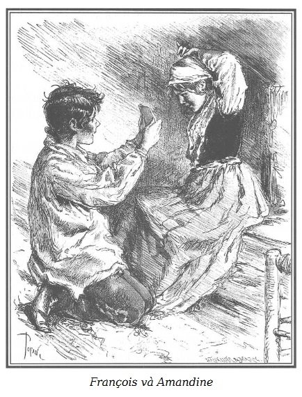

François và Amandine nằm trong căn phòng ở ngay phía trên bếp, cuối một hành lang thông vào nhiều buồng khác phục vụ cho đám khách quen lui tới quán rượu.
Sau khi ăn bữa tối đạm bạc, và đáng lẽ tắt đèn theo lời dặn của mẹ, hai đứa bé cứ thức để hé cửa chờ Martial đi ngang qua, khi anh ta quay về phòng.
Đặt trên một chiếc ghế đẩu đã gãy một chân, chiếc đèn lồng hắt ra những tia sáng nhạt qua cái chụp thủy tinh.
Bên trong căn phòng nhỏ hẹp gồm mấy bức tường thạch cao có những đường rạch bằng ván mỏng màu nâu là một chiếc giường tồi tàn dành cho François, một chiếc giường nhỏ đã cũ cho trẻ con quá ngắn đối với Amandine và một chồng những mảnh vụn ghế tựa và ghế dài do khách hàng ngổ ngáo của quán rượu đập phá.
Amandine, ngồi bên mép giường, học cách trùm đầu theo lối mỏ quạ với chiếc khăn quàng lấy trộm mà Nicolas cho nó.

.François đang quỳ gối, cầm một mảnh gương cho em gái, lúc ấy đang nghiêng đầu sang một bên sửa lại chiếc nơ hồng mà nó thắt bằng cách buộc hai đầu góc chiếc khăn xòe rộng.
Quá chăm chú và hết sức say sưa buộc khăn, François có lúc quên đặt thẳng mảnh gương để hình em nó hiện rõ trong ấy.
– Nhấc chiếc gương cao lên một chút, – Amandine bảo thằng anh. – Bây giờ em chẳng thấy hình trong gương nữa. Cao lên! Được rồi, cầm như thế một lát nữa nhé! Thôi, thế xong rồi. Nào, hãy nhìn xem! Anh thấy em trùm thế nào?
– Ồ, tuyệt vời quá! Tuyệt quá! Trời, cái nơ hoa hồng đẹp quá! Em làm giúp anh một cái như thế với cái cà vạt nhé!
– Ừ, lát nữa, phải để em dạo chơi một tí chứ. Anh đi trước mặt em, đi giật lùi, tay cầm chiếc gương giơ cao để em vừa đi vừa thấy được mình trong gương.
François cố gắng làm thật đúng thao tác khó khăn ấy, Amandine rất thích thú tỏ ra ung dung hoan hỉ và hãnh diện với những mũi cong của cái nơ hồng to tướng.
Rất đỗi thơ ngây và hồn nhiên trong mọi trường hợp khác, sự làm đỏm này đáng phê phán vì đã thực hiện trên một sản phẩm lấy trộm mà cả François và Amandine đều biết. Lại một bằng chứng nữa để chứng tỏ là trẻ em cho dẫu được tạo hóa phú cho bản chất tốt cũng dễ dàng trở nên hư hỏng không ngờ tới nếu chúng luôn bị chìm ngập trong một bầu không khí tội lỗi.
Hơn nữa, người hướng dẫn tinh thần độc nhất của những đứa trẻ khốn khổ này, anh Martial, cũng không phải là một người hoàn hảo. Không thể phạm tội ăn trộm, giết người, anh ta cũng sống một cuộc sống lang thang và không bình thường. Có thể những tội ác của gia đình làm cho anh ta bực bội, anh ta thiết tha yêu mến hai đứa trẻ, bảo vệ chúng để chúng khỏi bị ngược đãi, gắng đưa chúng ra khỏi ảnh hưởng nguy hại của gia đình, nhưng không dựa trên những nguyên lý đạo đức chặt chẽ, tuyệt đối, những lời khuyên của anh ta khó bảo vệ nổi những người mà anh ta che chở. Hai đứa bé này tuy chưa chịu làm một số hành vi xấu nào đó, không phải vì lương thiện mà chỉ để vâng lời Martial mà chúng yêu mến và không chịu tuân thủ theo người mẹ mà chúng vừa ghê sợ vừa oán ghét.
Còn chúng chẳng có một chút ý niệm gì về điều hay, điều dở, vì chúng quá quen với những gương xấu thường ngày diễn ra trước mắt, vì như chúng tôi đã nói, cái quán rượu nơi thôn dã mà những người lui tới là cặn bã của đám dân tồi tệ nhất, thường là nơi diễn ra những cuộc hành lạc ghê người, những cuộc chè chén dâm ô. Còn Martial, tuy thù ghét chuyện trộm cắp, giết người nhưng lại khá thản nhiên trước những trò phóng đãng này.
Như vậy để thấy những bản năng đạo đức của lũ trẻ là đáng lo ngại, dao động, bấp bênh biết bao, nhất là ở François đã đến thời điểm đáng sợ lúc tâm hồn ngập ngừng, lưỡng lự giữa điều thiện và điều ác, có thể trong chốc lát trở thành sa ngã, hay được cứu nguy…
– Chà, cái chiếc khăn trùm đỏ này hợp với em quá! – François khen ngợi. – Nó đẹp thật đấy. Khi chúng ta dạo chơi trên bãi trước lò thạch cao của bác thợ nung vôi, em phải trùm như vậy để làm cho lũ con nhà bác ta lồng lộn lên, bọn chúng cứ hay ném đá và gọi bọn mình là con nhà bị tội chết chém. Anh, anh cũng thắt cái cà vạt đỏ thật đẹp đẽ của anh và chúng ta sẽ bảo chúng, dù sao chúng mày cũng không có khăn lụa như hai anh em tao.
– Nhưng mà này, François ạ! – Amandine thủ thỉ sau một lúc nghĩ ngợi. – Nếu chúng nó biết những tấm khăn lụa này là đồ lấy trộm, chúng sẽ gọi ta là lũ trộm con.
– Biết vậy, chúng có gọi chúng ta là kẻ trộm thì cũng mặc chúng.
– Nếu không đúng như thế thì chẳng sao, nhưng, bây giờ…
– Nhưng anh Nicolas cho chúng ta hai chiếc khăn, chứ chúng ta có ăn trộm đâu.
– Đúng rồi, nhưng anh ấy lấy trộm trên một chiếc tàu, mà anh Martial thì lại khuyên không nên lấy trộm.
– Nhưng đấy là anh Nicolas lấy trộm chứ, việc gì đến chúng ta.
– Anh chắc thế hả, François?
– Chắc chắn chứ!
– Nhưng dù sao, em cũng thích giá cái người có khăn cho chúng ta thì cũng vẫn hơn. Còn anh thì sao, François?
– Đối với anh, cái đó chẳng can hệ gì đến mình. Người ta làm quà cho mình, thì đó là của mình rồi.
– Anh có chắc chắn như thế không?
– Chắc hẳn đi chứ, chắc lắm, em cứ yên tâm!
– Vậy thì, càng hay, chúng ta không theo lời anh Martial cấm đoán mà chúng ta vẫn có những chiếc khăn đẹp.
– Này, Amandine, nếu anh ấy biết hôm nọ chị Quả Bầu đã bảo em lấy trộm chiếc khăn choàng vai kẻ ô vuông trong kiện hàng của người bán hàng rong trong lúc người ấy quay sang phía khác thì sao?
– Ôi, François, đừng nói thế! – Con bé tội nghiệp chảy nước mắt, dặn anh. – Biết vậy, anh Martial có thể không thương chúng ta nữa… anh thấy không… và bỏ mặc chúng ta ở đây.
– Đừng sợ, anh đã nói với anh ấy bao giờ đâu. Anh chỉ buồn cười…
– Ôi, đừng cười như vậy, François ạ, em cũng khá buồn, nhưng thôi, phải làm như thế, chị ấy véo em buốt đến xương, rồi chị ấy đưa mắt. Tuy vậy, hai bận em vẫn không dám làm, em đã tưởng là không bao giờ em có thể làm thế. Nhưng mà người bán rong chẳng thấy gì hết, và rồi chị ấy giữ luôn chiếc khăn choàng. Ấy vậy mà nếu người ta bắt được em, François ạ, người ta sẽ bỏ tù em…
– Người ta không bắt được em, như vậy cũng như em không ăn trộm.
– Anh tin như vậy hả?
– Tất nhiên.
– Và nhỡ vào tù, thì chắc khổ lắm nhỉ?
– À, đúng quá, trái lại…
– Làm sao, François, trái lại làm sao?
– Này, em biết cái anh thọt ở Paris, tại nhà lão Micou, người bán lại đồ cho anh Nicolas, người quản lý một nhà cho thuê có sẵn đồ ở Paris, trong ngõ Brasserie không?
– Cái anh thọt to lớn ấy à?
– Đúng thế đấy, anh ta đến đây, hồi cuối thu, thay mặt lão Micou, cùng với một người biểu diễn xiếc khỉ và hai người đàn bà nữa.
– À, phải rồi, phải rồi, cái anh thọt to lớn đã tiêu xài bao nhiêu tiền chứ gì?
– Anh cũng thấy thế, anh ta chi tiền cho tất cả mọi người. Em có nhớ những buổi dạo chơi trên sông không, anh đưa họ đi ấy, cái anh biểu diễn xiếc khỉ đã đem cả đàn ống để dạo nhạc trên tàu?
– Rồi tối đến họ bắn pháo hoa rõ đẹp, anh François nhỉ?
– Mà cái anh thọt ấy không bủn xỉn đâu nhé, anh ấy cho anh mười xu cơ đấy! Mà anh ấy chỉ dùng toàn thứ rượu vang gắn xi, bọn họ mỗi bữa ăn đều có gà giò. Ít nhất cũng phải tám mươi franc đấy!
– Nhiều thế hả, anh François?
– Ồ, nhiều chứ.
– Thế anh ta giàu lắm nhỉ?
– Không đâu, tiền anh ta tiêu, là tiền kiếm được trong tù, anh ta từ đấy ra mà.
– Tất cả tiền ấy anh ta kiếm được ở trong tù à?
– Anh ta nói rằng còn bảy trăm franc nữa, rằng khi nào không còn gì nữa anh ta sẽ xoay một chuyến, và nếu người ta bắt được, anh ta cũng chẳng cần, bởi vì anh ta sẽ quay lại với dân ngục thất đáng yêu, như anh ta thường tuyên bố.
– Vậy là anh ta không sợ bị tù, François nhỉ?
– Trái lại, anh ta nói với chị Quả Bầu là ở đấy anh ta có vô khối bạn bè và những bạn chơi ở trong ấy… rằng chưa bao giờ anh ta có nơi ở dễ chịu và nơi ăn vừa ý như lúc ở tù. Một tuần bốn lần thịt ngon, có lửa sưởi suốt mùa đông và lúc ra tù lại có món tiền kha khá. Trong lúc đó có những người thợ lương thiện khổ như súc vật, chết đói, chết rét vì thiếu việc làm…
– Anh François này, chắc chắn cái anh thọt ấy nói như thế chứ?
– Thì anh nghe rõ mà. Bởi vì chính anh chèo chiếc xuồng nhỏ trong khi anh ta kể chuyện cho chị Quả Bầu và hai người đàn bà nghe, cả hai người này cũng nói rằng ở những nhà tù phụ nữ mà họ vừa ra cũng như vậy.
– Nhưng mà anh François ạ, như vậy thì ăn cắp cũng chẳng có gì xấu lắm, vì ở tù dễ chịu thế kia mà.
– Chao ôi! Anh cũng chẳng hiểu nữa, ở đây chỉ có anh Martial nói ăn trộm là xấu. Có thể anh ấy lầm cũng nên…
– Dù sao, cũng phải tin anh ấy, anh François ạ. Anh ấy yêu chúng ta thế kia mà!
– Anh ấy yêu chúng ta, đúng rồi, khi có mặt anh ấy, chúng ta không bị đòn. Nếu có anh ấy ở đây tối nay, mẹ có lẽ sẽ không cho anh một trận như thế. Bà già xấu thói! Bà ấy ác thật! Ôi, anh ghét bà ấy! Anh ước mong chóng lớn để nếu bà ấy đánh chúng ta thì anh sẽ chống lại, nhất là lúc đánh em, vì em không chịu được như anh đâu.
– Ôi, anh François, thôi đi! Nghe chuyện anh muốn đánh trả mẹ, em rợn cả người. – Con bé vừa nói vừa khóc, vừa giơ tay ôm lấy cổ anh và âu yếm hôn anh.
– Không, như vậy cũng đúng, – François vừa lấy tay dịu dàng đẩy Amandine ra vừa nói – tại sao mẹ và chị Quả Bầu căm ghét chúng ta thế nhỉ?
– Em cũng chẳng hiểu sao, – Amandine vừa trả lời vừa lấy bàn tay lau mắt – có lẽ vì người ta bắt anh Ambroise chịu tội khổ sai và người ta bắt bố phải lên máy chém, nên cả mẹ, cả chị Quả Bầu đều tàn ác với chúng ta…
– Nhưng có phải lỗi tại chúng ta đâu?
– Trời ơi, đâu có, nhưng anh bảo thế nào?
– Thật tình, nếu anh cứ luôn phải chịu đòn, thì cuối cùng thà anh đi ăn trộm như người ta muốn. Mà nếu không ăn trộm thì anh cũng có hơn được gì đâu?
– Nhưng còn anh Martial, anh ấy sẽ bảo thế nào?
– Ôi, nếu không có anh ấy thì anh đã bằng lòng từ lâu, vì cứ bị ăn đòn cũng nản lắm. Này em, tối nay, chưa bao giờ mẹ dữ tợn như vậy. Thật cứ như người điên, trời thì tối như mực, mẹ không hề hé răng. Anh chỉ thấy tay mẹ lạnh buốt túm lấy cổ anh, còn tay kia thì mẹ đánh rồi thì hình như anh thấy mắt mẹ long lên…
– François tội nghiệp, chỉ tại anh thấy một cái xương người chết ở nơi xếp củi.
– Thì đúng mà, một cái chân từ dưới đất trồi lên, – François rùng mình kinh hãi – anh nói đúng mà.
– Có lẽ xưa kia ở đấy là một cái nghĩa địa nhỉ?
– Thì phải tin như thế thôi! Nhưng thế thì tại sao mẹ lại bảo sẽ dìm chết anh nếu anh còn nhắc đến xương người chết với anh Martial? Em thấy không, có lẽ một người nào đó bị người ta giết trong một cuộc cãi lộn, rồi đem chôn ở đấy để không ai biết.
– Anh nói có lý đấy, vì anh nhớ không? Một tai nạn như vậy vừa suýt xảy ra.
– Lúc nào thế?
– Anh biết đấy, cái lần mà lão Cá Trê đâm một nhát dao vào cái ông gầy giơ xương để lấy tiền ấy.
– À, phải, cái ông Bộ xương di động như họ vẫn gọi, mẹ đến và can họ. Nếu không thì Cá Trê đã giết chết người gầy giơ xương ấy. Thế em có thấy lão ta sùi cả bọt mép, và mắt muốn lòi ra khỏi đầu, cái lão Cá Trê ấy?
– Ôi, chẳng có chuyện gì lão cũng có thể cho một nhát dao làm cho người ta thẳng cẳng ra. Lão thật là một tay sừng sỏ! Còn trẻ mà dữ tợn quá, anh François ạ!
– Thằng Tập Tễnh còn ít tuổi hơn nhiều, nhưng ít nhất nó cũng độc ác như lão, nếu nó có lực hơn.
– Ừ, thật đấy, nó độc ác thật. Hôm trước nó đánh em, chỉ vì em không muốn chơi với nó.
– Nó đánh em à? Được rồi, lần sau nó đến đây…
– Không, không, anh François ạ, đùa thôi mà.
– Chắc chắn thế chứ?
– Ừ, đúng thế thật.
– Thế thì tốt! Nếu không… Nhưng anh cũng không hiểu thằng ranh ấy làm gì, mà luôn có lắm tiền thế, nó sướng thật đấy! Cái lần nó đến đây với mụ Vọ, nó khoe với anh em mình những đồng tiền vàng hai mươi franc. Nó có vẻ như giễu cợt khi nói với chúng ta: “Chúng mày cũng sẽ có như thế nếu chúng mày không phải là những đứa thộn.”
– Những đứa thộn?
– Phải, tiếng lóng có nghĩa là ngu ngốc, đần độn.
– À, phải, đúng đấy.
– Bốn mươi franc bằng vàng, anh mua được bao nhiêu thứ đồ quý với món tiền đó. Còn em, Amandine?
– Ồ, em cũng vậy.
– Em mua những gì nào?
– Để coi nào, – cô bé cúi đầu ra dáng suy nghĩ – em sẽ mua cho anh Martial một cái áo khoác thật ấm để anh ấy khỏi bị lạnh khi đi thuyền.
– Mua cho em cơ, em ấy?
– Em rất thích một tượng chúa Jesus nhỏ bằng sáp với chú cừu và cây thánh giá giống như mấy bức tượng thạch cao mà người ta bán hôm Chủ nhật, anh biết đấy, ở hành lang nhà thờ Asnières.
– Như vậy, miễn người ta đừng nói với mẹ hoặc với chị Quả Bầu là đã gặp chúng ta trong nhà thờ.
– Đúng đấy, mẹ luôn luôn cấm chúng ta vào đấy. Thật đáng tiếc, bởi vì trong đấy rất thích, một cái nhà thờ, phải không anh François?
– Phải! Những giá đèn sáp bạc đẹp quá chừng!
– Và bức chân dung Đức Mẹ Đồng Trinh, bà ấy có dáng hiền từ đến lạ!
– Và những cây đèn thật đẹp! Em có thấy không? Cả cái khăn bàn diêm dúa trải trên cái tủ buffet lớn ở trong cùng mà ông cha xứ làm lễ với hai người ăn mặc như ông ấy, rót nước và rượu cho ông ấy?
– François này, anh có nhớ không, năm nọ ngày lễ Thánh thể, khi bọn mình thấy tất cả những người chịu lễ ban thánh thể nhỏ nhắn trùm chiếc khăn choàng trắng đi trên cầu?
– Họ mang những bó hoa thật đẹp!
– Họ hát thật êm dịu, tay cầm những dải cờ.
– Và những hình thêu bằng chỉ bạc trên cờ hiện lóng lánh dưới ánh mặt trời. Những cái đó chắc phải đắt tiền lắm.
– Trời ơi, đẹp quá đi thôi, anh François!
– Anh cũng thấy thế, và những người chịu lễ ban thánh thể, với những chiếc nơ bằng xa tanh trắng ở tay, và những cây sáp có cán nhung đỏ viền vàng nữa.
– Những bé trai cũng có cờ hiệu, phải không François? A, trời ơi, hôm ấy em cũng bị đòn vì hỏi mẹ tại sao chúng ta không được đi đám rước như những đứa bé khác.
– Vì thế mẹ còn cấm chúng ta không bao giờ được vào nhà thờ mỗi khi chúng ta ra thị trấn hoặc đến Paris, trừ phi là tới đấy để lấy trộm hộp quyên tiền cho người nghèo hoặc móc túi giáo dân xứ đạo trong lúc họ đang dự lễ. Chị Quả Bầu còn phụ họa thêm, nhe mấy chiếc răng vàng xuộm ra cười. Con người bậy bạ, thế đấy!
– Ôi, ăn trộm trong nhà thờ, như thế giết mình còn hơn, phải không, François?
– Ở đấy hay ở nơi khác thì có can gì một khi người ta đã quyết tâm?
– Thế ư! Em không biết. Em sợ lắm! Em không bao giờ có thể…
– Vì những cha xứ phải không?
– Không. Có lẽ tại bức chân dung Đức Mẹ Đồng Trinh, dáng dịu dàng thế, hiền hậu thế.
– Bức chân dung ấy có tác dụng gì? Nó có ăn thịt em được đâu. Em xoàng thật đấy!
– Đúng thế, nhưng dù sao, em không thể. Đấy không phải lỗi ở em…
– Nhân nói đến các cha xứ, Amandine, em có nhớ hôm anh Nicolas tát anh hai cái điếng người bởi vì anh ấy bắt gặp anh chào cha xứ trên bãi cát không? Anh thấy mọi người chào ông ấy, anh cũng chào, anh không tin như vậy là sai.
– Đúng, nhưng mà lần ấy anh Martial cũng bảo, như anh Nicolas, là chúng ta không cần chào các ông cha xứ.
Giữa lúc ấy, François và Amandine nghe tiếng bước chân ngoài hành lang.
Martial trở về phòng, không nghi ngại sau cuộc nói chuyện với mẹ, tin rằng Nicolas bị nhốt đến sáng mai.
Nhìn thấy một tia sáng lọt ra từ phòng mấy đứa bé qua cánh cửa hé mở, Martial bước vào.
Cả hai đứa bé chạy lại bên anh và Martial âu yếm hôn các em.
– Thế nào? Chúng mày chưa đi ngủ à, mấy đứa bé lắm chuyện?
– Chưa anh ạ, chúng em đợi anh về để chào anh trước khi đi ngủ. – François phụ họa.
– Đúng, tao vừa có chuyện với thằng Nicolas. Nhưng chẳng hề gì đâu. Vả chăng tao rất vui lòng thấy hai đứa còn thức, tao có một tin vui muốn cho chúng mày biết.
– Cho chúng em ấy ư, anh?
– Chúng mày có bằng lòng rời khỏi nơi đây để đến ở với anh ở nơi khác, thật xa, thật xa không?
– Ồ, có chứ anh!
– Có, anh ạ!
– Vậy thì, hai hoặc ba ngày nữa, cả ba anh em ta sẽ rời khỏi đảo.
– Thích quá thôi! – Amandine vừa reo lên vừa vui vẻ vỗ tay.
– Thế chúng ta đi đâu? – François cũng vội hỏi.
– Rồi mày sẽ biết, thằng thóc mách ạ. Nhưng dù chúng ta đến bất cứ nơi đâu mày cũng sẽ được học một nghề dễ chịu, có thể giúp mày kiếm sống, chắc chắn thế.
– Em không đi câu cá với anh nữa, hả anh?
– Không, em ạ, mày sẽ đi học việc ở nhà một người thợ mộc hoặc thợ khóa, mày khỏe, mày khéo, với lòng dũng cảm và sự quyết tâm, chỉ trong một năm mày đã có thể kiếm được việc, ơ hay, mày sao thế? Mày có ý không vui.
– Là bởi vì, anh ạ, em…
– Vì sao, cứ nói đi xem nào?
– Là bởi vì em không muốn rời xa anh, em đi câu, vá lưới cho anh hơn là đi học nghề.
– Thế à?
– Chết nỗi, suốt ngày giam mình trong một xưởng thợ thật là buồn rồi lại còn phải học việc, chán quá!
Martial nhún vai.
– Thế thì lười biếng, lêu lổng, rong chơi thì hơn, phải không? Để sau này trở thành trộm cắp. – Anh ta nghiêm túc răn em.
– Không phải thế, nhưng em muốn ở với anh ở nơi khác như chúng ta ở đây, chỉ thế thôi.
– Phải rồi, ăn uống, ngủ và thoải mái đi câu như một người tư sản, phải thế không?
– Em thích thế hơn.
– Có như thế, nhưng mày còn thích nhiều thứ khác. Này, mày thấy không, François thân yêu? Đã đến lúc khẩn thiết anh phải đem mày đi khỏi nơi này, nếu không mày cũng sẽ trở nên hư hỏng như những đứa khác. Mẹ nói đúng đấy, tao e mày đã nhiễm tật xấu. Còn mày, Amandine ạ, thế học một nghề có làm cho mày khó chịu không?
– Ồ, không anh ạ! Em thích học lắm, em thích làm gì cũng được còn hơn ở lại nơi này. Em rất thích được đi theo anh và anh François.
– Nhưng trên đầu mày có cái gì thế hả em? – Martial hỏi khi nhận thấy cách bới tóc của Amandine.
– Một chiếc khăn quàng mà anh Nicolas cho em.
– Anh ấy cũng cho em một cái. – François nói với niềm kiêu hãnh.
– Thế những chiếc khăn ấy lấy từ đâu? Tao cũng lạ khi thấy thằng Nicolas mua mấy chiếc khăn đó để làm quà cho chúng mày.
Hai đứa bé cúi đầu không nói gì.
Sau vài giây, François quả quyết nói:
– Anh Nicolas cho chúng em. Chúng em không biết anh ấy lấy ở đâu, phải không Amandine?
– Không, không anh ạ! – Amandine ấp úng, mặt đỏ bừng không dám ngước mắt nhìn Martial.
– Em không được nói dối. – Martial nghiêm khắc bảo em.
– Chúng em không nói dối. – François mạnh dạn trả lời.
– Amandine, em, em hãy nói thật. – Martial dịu dàng dỗ em.
– Vậy thì, em xin nói thật là, – Amandine rụt rè nói tiếp – mấy chiếc khăn này lấy trong một hòm vải mà anh Nicolas mang về tối nay.
– Và nó đã lấy trộm, phải không?
– Em đoán thế, anh ạ, trên một chiếc thuyền.
– Mày thấy chưa, François, mày nói dối. – Martial mắng.
Thằng bé cúi đầu im lặng.
– Mày đưa cái khăn ấy cho anh, Amandine. Mày đưa cả cái của mày cho anh, François.
Con bé tháo khăn, nhìn một lần cuối chiếc nơ hoa hồng lớn chưa gỡ ra và đưa chiếc khăn choàng cho Martial, cố nén một tiếng thở dài luyến tiếc.
François thong thả rút khăn trong túi áo và trao lại cho Martial.
– Sáng mai, – Martial dặn – tao sẽ trả mấy cái khăn này cho thằng Nicolas, đáng lẽ chúng mày không nên nhận, các em ạ, sử dụng đồ lấy trộm thì cũng như chính mình lấy trộm vậy.
– Thật đáng tiếc, những chiếc khăn ấy thật đẹp. – François thở dài luyến tiếc.
– Khi mày đã có một nghề nghiệp và làm lụng kiếm ra tiền, mày sẽ mua được những thứ đẹp như vậy. Thôi, đi ngủ đi, khuya rồi, các em ạ!
– Anh không giận chúng em chứ? – Amandine rụt rè hỏi.
– Không, em ạ, đó không phải là lỗi của em. Hai em sống chung với những kẻ chẳng ra gì, các em làm theo chúng mà không hiểu. Nếu các em ở với những người tử tế, các em cũng sẽ làm như họ, và rồi đây các em sẽ được như thế. Nếu không thì quỷ tha ma bắt anh đi. Thôi nhé, đi ngủ đi!
– Chúng em chào anh ạ!
Martial ôm hôn hai đứa bé.
Trong phòng chỉ còn lại hai anh em.
– Anh sao thế, François? Trông anh xịu mặt thế. – Amandine bảo anh trai.
– Em ạ, anh Martial lấy mất chiếc khăn đẹp của anh và em không nghe thấy ư?
– Nghe gì kia?
– Anh ấy định đem chúng mình đi học việc…
– Anh không thích thế à?
– Thật tình anh chẳng thích tí nào.
– Anh thích ở đây để ngày nào cũng bị ăn đòn à?
– Anh bị đòn thật, nhưng ít ra anh cũng không phải làm việc, suốt ngày anh ở trên thuyền hoặc đi câu, hoặc chơi đùa, hoặc phục vụ khách hàng, những người này đôi khi cho anh tiền thưởng như cái nhà anh thọt ấy. Như thế chẳng vui hơn là từ sáng đến tối giam mình trong một xưởng thợ và làm việc như một con chó.
– Thế anh không nghe rõ à? Anh Martial đã bảo là nếu chúng ta ở đây lâu hơn nữa, chúng ta sẽ trở thành những kẻ vô lại.
– Ái chà! Anh chẳng cần, vì bọn trẻ các nhà khác vẫn gọi chúng ta là con nhà ăn trộm, con nhà bị án chém. Vả lại, phải làm việc, chán ơi là chán.
– Nhưng ở đây chúng ta sẽ bị đòn luôn!
– Chúng ta bị đòn vì chúng ta nghe lời anh Martial hơn người khác.
– Anh Martial tốt với chúng ta thế!
– Anh ấy tốt, anh không phủ nhận. Vì vậy anh cũng rất yêu quý anh ấy, không ai dám đánh đập chúng ta trước mặt anh ấy. Anh ấy dẫn chúng ta đi chơi, đúng thật, nhưng chỉ có thế thôi. Anh ấy có bao giờ cho chúng ta cái gì đâu?
– Chết nỗi, anh ấy có gì đâu? Làm được gì, anh ấy đều đưa cho mẹ để mua cái ăn.
– Thế nhưng anh Nicolas lại có đấy. Chắc chắn là nếu chúng ta nghe anh ấy và nghe mẹ nữa thì không ai ngược đãi chúng ta. Mà mẹ và các anh chị ấy sẽ cho chúng ta những quần áo đẹp như hôm nay. Mọi người sẽ chẳng ngờ vực chúng ta. Chúng ta sẽ có tiền như thằng Tập Tễnh.
– Nhưng trời ơi, muốn thế thì phải đi ăn trộm, và như vậy thì sẽ làm phiền lòng anh Martial biết bao.
– Chà, mặc kệ.
– Ôi, anh François. Vả lại, nếu họ bắt được, chúng ta sẽ phải đi tù.
– Ở tù hoặc bị giam trong một xưởng thợ suốt ngày thì cũng như nhau. Hơn nữa, cái ông thọt lớn chẳng đã nói là ở đấy cũng thích ư, nhà tù ấy.
– Nhưng nỗi phiền muộn mà chúng ta gây ra cho anh Martial, anh không nghĩ đến ư? Anh không nghĩ rằng chỉ vì chúng ta mà anh ấy về đây và anh ấy ở lại. Một mình thì anh ấy chẳng vướng víu gì, anh ấy sẽ trở vào rừng đi săn như anh ấy rất ưa thích.
– Thế thì anh ấy cứ việc đưa chúng ta theo anh ấy vào rừng, – François nói – thế chẳng hay hơn sao? Anh sẽ ở với anh ấy vì anh yêu anh ấy lắm, nhưng anh không học những nghề mà anh chẳng thích chút nào.
Cuộc trao đổi giữa François và Amandine bị cắt ngang. Ở bên ngoài, người ta khóa cửa hai vòng.
– Có người nhốt chúng ta lại. – François bảo em gái.
– Trời hỡi, vì sao thế hả François? Người ta định làm gì chúng ta?
– Có thể là anh Martial.
– Nghe kìa, chó sủa dữ quá! – Amandine vừa nói vừa lắng nghe.
Một lát sau, François lại bảo:
– Hình như có người lấy búa đập cửa phòng anh ấy. Có lẽ người ta muốn phá cửa.
– Thôi đúng rồi, con chó sủa liên hồi…
– François ơi, nghe này! Bây giờ thì nghe như người ta đóng đinh vào cái gì đấy. Trời ơi, trời ơi, em sợ… Không biết họ định làm gì anh ấy? Đấy, con chó lại rú lên kìa.
– Amandine ơi, không nghe thấy gì nữa rồi. – François vừa đi lại gần cửa vừa nói.
Hai đứa nín thở, nghe ngóng một cách lo ngại.
– Họ từ phòng Martial trở về, – François thì thầm – anh nghe tiếng bước chân ở hành lang.
– Chúng ta lên giường nằm đi, mẹ sẽ giết chúng ta nếu thấy chúng ta đang đứng đây. – Amandine hoảng hốt.
– Không, – François vừa lắng nghe vừa đáp lại – họ vừa đi qua cửa phòng chúng ta, họ vừa xuống cầu thang vừa chạy…
– Trời ơi, trời ơi, cái gì vậy nhỉ?
– Ôi, người ta mở cửa bếp, bây giờ…
– Anh chắc không?
– Chắc chứ, anh nhận rõ tiếng.
– Con chó của anh Martial vẫn rú lên. – Amandine vừa nói vừa nghe ngóng.
Đột nhiên, con bé kêu lên:
– François ơi, anh ấy gọi bọn mình…
– Anh Martial ấy à?
– Phải, anh nghe thấy không? Nghe thấy không?
Thật vậy, mặc dầu cửa đã khép kín, tiếng gọi vang động của Martial từ phòng riêng vẫn dội vào tai hai đứa bé.
– Trời ơi, chúng ta không thể đến phòng anh ấy, chúng ta bị nhốt ở đây. – Amandine than thở. – Chắc là họ muốn làm hại anh ấy, nên anh ấy mới gọi chúng ta…
– Ôi, nếu có cách gì ngăn chặn được, – François quả quyết – anh sẽ ngăn chặn, dẫu họ có xé xác anh ra.
– Nhưng anh Martial không biết người ta khóa trái cửa phòng chúng ta, anh ấy tưởng chúng ta không chịu đến cứu anh ấy. Hét to lên cho anh ấy biết là chúng ta bị nhốt trong phòng!
Thằng bé sắp làm theo lời em thì một tiếng đập mạnh rung chuyển phía ngoài cánh cửa chớp căn phòng.
– Họ trèo qua cửa sổ để giết chúng ta! – Amandine bảo. Và trong lúc hoảng sợ, nó vội nhảy lên giường, lấy hai tay che kín mặt.
François lặng im mặc dầu nó cũng sợ hãi không kém.
Tuy nhiên, sau tiếng đập mạnh, cánh cửa chớp vẫn không mở, một sự im lặng nặng nề bao trùm cả ngôi nhà.
Martial đã thôi không gọi em nữa.
Được yên tâm đôi chút, lại bị tính tò mò kích thích, François đánh liều khẽ hé cửa sổ và cố nhìn ra ngoài qua các khe cửa chớp.
– Cẩn thận đấy, François ạ! – Amandine khe khẽ dặn anh khi thấy François mở cửa sổ, và ngồi yên trên ghế. – Có thấy gì không anh? – Con bé thì thầm.
– Không, trời tối đen như mực ấy.
– Không nghe thấy gì à?
– Không, gió thổi mạnh quá!
– Quay lại, quay lại đây, anh!
– À, bây giờ anh thấy rồi.
– Thấy cái gì kia?
– Ánh sáng của một chiếc đèn lồng. Nó tới rồi lui.
– Ai xách đèn?
– Anh chỉ thấy ánh sáng thôi. À này, ánh sáng lại gần, lại có tiếng người nói.
– Ai vậy?
– Nghe này, nghe này, tiếng chị Quả Bầu.
– Chị ấy nói gì thế?
– Chị ấy dặn giữ vững chân thang.
– À, phải rồi, vì để cái thang lớn áp vào cửa chớp phòng chúng ta nên có tiếng động ban nãy.
– Anh chẳng nghe thấy gì nữa.
– Thế bây giờ họ dùng thang làm gì thế?
– Anh chẳng thấy gì nữa.
– Anh không nghe thấy gì nữa à?
– Không…
– Trời ơi, anh François, có lẽ họ dùng thang để leo qua cửa sổ vào phòng anh Martial!
– Có thể lắm!
– Giá anh khẽ lật bức sáo để xem.
– Anh chịu thôi.
– Chỉ một tí thôi mà.
– Ồ, không. Như thế mẹ sẽ thấy!
– Trời tối như mực, sợ gì.
François, tuy thấp thỏm, cũng chiều ý em gái, hé mở cửa chớp và nhìn.
– Cái gì thế anh? – Amandine vượt lên nỗi lo sợ, nhón chân nhích lại gần François.
– Dưới ánh sáng chiếc đèn lồng, – thằng bé nói – anh thấy chị Quả Bầu đang giữ chân thang. Họ dựng thang vào cửa sổ phòng anh Martial.
– Rồi sao?
– Anh Nicolas leo thang, tay cầm rìu con, sáng loáng.
– À, chúng mày không đi ngủ mà đi rình mò. – Mụ góa đứng bên ngoài chợt quát lên.
Lúc trở vào bếp, bà ta thấy ánh sáng lọt ra từ cánh cửa chớp hé mở.
Bọn trẻ đã không lưu ý tắt đèn.
– Tao lên đây, – bà ta gầm lên dữ dội – tao bảo chúng mày đấy, bọn nhãi do thám!
Đấy là những sự việc đã xảy ra trên đảo Ravageur trước hôm mụ Séraphin đưa Marie tới đây.